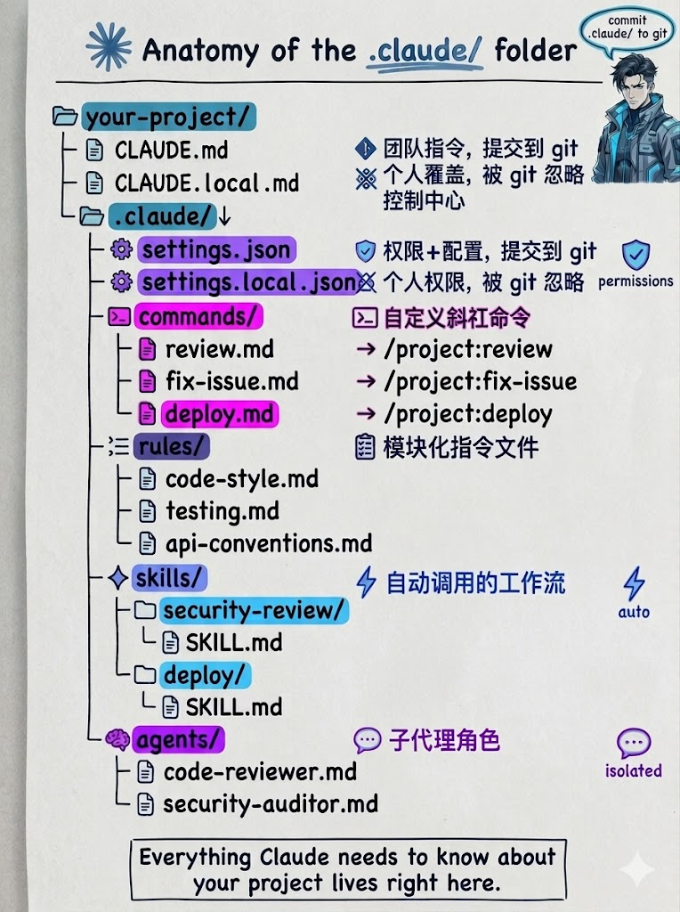
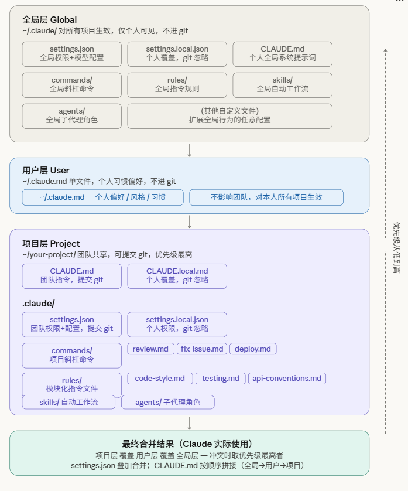

把 Claude 官方的 `Tutorials`、`Use Cases` 和 `Anthropic Engineering` 收成教程线的一个稳定子入口。后面逐篇翻译时，关键图、界面截图和原文链接都会一起保留下来。
自动更新，始终保持最新版本
curl -fsSL https://claude.ai/install.sh | bashirm https://claude.ai/install.ps1 | iexcurl -fsSL https://claude.ai/install.cmd -o install.cmd && install.cmd && del install.cmdbrew install --cask claude-codebrew upgrade claude-code 获取最新功能。
winget install Anthropic.ClaudeCodewinget upgrade Anthropic.ClaudeCode。
cd your-project
claude首次使用会提示登录，按照指引完成认证。
这个项目做什么？
这个项目使用什么技术？
主入口点在哪里？Claude 会自动分析你的代码库并回答问题。
在主文件中添加一个 hello world 函数Claude Code 会：找到文件 → 显示建议 → 请求批准 → 进行编辑
我更改了哪些文件？
用描述性消息提交我的更改Git 操作变得对话式，自然语言即可完成。
| 命令 | 功能 | 示例 |
|---|---|---|
claude |
启动交互模式 | claude |
claude "task" |
运行一次性任务 | claude "fix the build error" |
claude -p "query" |
运行一次性查询 | claude -p "explain this function" |
claude -c |
继续最近的对话 | claude -c |
claude -r |
恢复之前的对话 | claude -r |
/help |
显示可用命令 | /help |
/clear |
清除对话历史 | /clear |
Claude Code 有两个互补的记忆系统，在每次对话开始时加载：
由你编写
包含指令和规则
项目、用户或组织范围
每个会话完整加载
用于：编码标准、工作流、项目架构
由Claude编写
包含学习和模式
每个工作树
前 200 行或 25KB
用于：构建命令、调试见解、发现的偏好
| 范围 | 位置 | 用途 | 共享对象 |
|---|---|---|---|
| 项目指令 | ./CLAUDE.md 或 ./.claude/CLAUDE.md |
项目架构、编码标准 | 团队成员（通过 Git） |
| 用户指令 | ~/.claude/CLAUDE.md |
个人偏好、工具快捷方式 | 仅你（所有项目） |
| 托管策略 | /etc/claude-code/CLAUDE.md |
公司编码标准、安全策略 | 组织中的所有用户 |
# 项目规则
## 代码规范
- 使用 TypeScript strict mode
- 遵循 ESLint 规则
- 测试覆盖率 > 80%
## 架构说明
- 前端: React + Vite
- 后端: Node.js + Express
- 数据库: PostgreSQL
## 工作流
- 提交前运行: npm run lint && npm test
- PR 需要 1 个以上 review
## 导入其他文件
- 详见 @README
- Git 工作流 @docs/git-instructions.md对于大型项目，可以将规则拆分到多个文件：
your-project/
├── .claude/
│ ├── CLAUDE.md # 主项目指令
│ └── rules/
│ ├── code-style.md # 代码样式指南
│ ├── testing.md # 测试约定
│ └── security.md # 安全要求---
paths:
- "src/api/**/*.ts"
---
# API 开发规则
- 所有 API 端点必须包括输入验证
- 使用标准错误响应格式
- 包括 OpenAPI 文档注释写具体到足以验证的指令：
npm test"而不是"测试你的更改"每个 CLAUDE.md 文件目标在 200 行以下。较长的文件消耗更多上下文并降低遵守度。
使用 markdown 标题和项目符号分组相关指令。有组织的部分比密集段落更容易遵循。
如果两条规则相互矛盾，Claude 可能会任意选择一条。定期审查删除过时指令。
.claude/ 与项目配置全景Claude Code 通过多层目录与文件记住「你是谁、团队规范、自动化技能、子代理分工」。下方左为目录解剖、右为配置层级与合并规则（示意图）；读完图后再看三条合并规则与下表。
CLAUDE.md 给团队共享说明；CLAUDE.local.md 个人覆盖；.claude/ 下放权限、自定义斜杠命令、规则碎片、Skills、Agents 等。请将团队需要共享的 .claude/ 内容提交 git；带 .local 的保持私有。

~/.claude/、用户 ~/.claude.md、项目 your-project/，到底部「最终合并结果」。图中标注优先级从低到高；settings.json 为叠加合并，说明类文档按全局 → 用户 → 项目顺序拼接（非覆盖），任意层级 *.local 均应 gitignore、不入库。

CLAUDE.md 系：拼接，不是覆盖有效层级通常按全局 → 用户 → 项目顺序依次追加到系统提示上下文中。模型能同时看到各层内容；后文与上文冲突时，模型一般会更重视更贴近当前仓库的段落，但技术上不是「只保留最后一层」——不要假设项目文件会删掉全局说明。
settings.json：深度合并JSON 配置按对象递归合并：同名字段以更具体的一层（通常是项目）为准；不冲突的键在各层保留。适合「全局默认 + 项目覆盖少数开关」。
*.local：统一私有不入库无论位于 ~/.claude/ 还是项目 .claude/，文件名含 .local 的（如 settings.local.json、CLAUDE.local.md）都应视为个人机密/本机偏好，加入 .gitignore，勿提交。
.claude/settings.json |
团队配置 | 权限、模型偏好等与 JSON 可表达项；与全局 ~/.claude/settings.json 叠加，冲突键以项目为准。 |
.claude/commands/ |
自定义斜杠命令 | 每个 Markdown（或当前版本支持的格式）对应一条 /命令名。部分环境会显示带命名空间前缀（如 /project:deploy），以本机 /help 为准。 |
.claude/rules/ |
模块化规则 | 按文件拆分（代码风格、测试、API 约定等），可用 frontmatter 限定 paths；与根 CLAUDE.md 互补，减少单文件过长。 |
.claude/skills/ |
Skills 工作流 | 子目录 + SKILL.md，可被模型在合适时机自动选用或通过 /skills 浏览。 |
.claude/agents/ |
子代理角色 | 定义隔离上下文的专家人设（如 code reviewer），由 /agents 或工具链挂载。 |
更多斜杠命令用法见本章后文 命令参考；与 Memory 章节中的 CLAUDE.md、rules frontmatter 可交叉阅读。
Skills 的重点不是“多一个命令”，而是把场景、约束、步骤、可用工具打包成可复用工作流。参考 Appendix C 的思路，这一节改成高密度索引 + 工作台视角：先看它在真实会话里怎么出现，再看怎么选、怎么装、怎么组合、怎么自己写。
更准确的理解是：Skill 不是对话主体，也不是单独的 UI 模块，而是被模型在合适时机调用的可复用工作流包。它通常包含：
description 和正文说明触发条件SKILL.mdallowed-tools、context、agent 约束执行边界所以这一节最重要的不是“长得像聊天软件”，而是让读者看懂：Skill 如何嵌进真实任务链。
/pdf、/markitdown、/docx 把 PDF / Word / PPT / Excel 统一变成可检索内容。
/pyzotero、/citation-management、/arxiv-database 负责元数据、BibTeX 和文献补全。
/paper-polish-workflow、/humanizer-zh、/drawio、/plotly 把结构、表达和图表一起补齐。
先描述任务，再去找 skill，不要只按名字搜。
高下载量通常意味着被更多真实用户验证过。
优先用 2 到 4 个 skill 串成链，而不是期待单个 skill 包打天下。
涉及写文件、部署、外部 API 时，必须先看权限和 frontmatter。
Appendix C 的信息密度高在于：它不是泛泛列能力，而是按真实任务链给出“最常用、最值得先装、可以互相配合”的组合。下面是更适合本教程的整理版。
| 优先级 | 推荐组合 | 适合解决什么 |
|---|---|---|
| 先装 | /pdf + /drawio |
一个负责“吃进去全文材料”，一个负责“画出结构和流程”；是从阅读到表达最常用的一组。 |
| 第二组 | /markitdown + /docx + /pptx + /xlsx |
把导师、同事、学校要求给你的 Office 文件接进工作流，减少格式孤岛。 |
| 研究链 | /pyzotero + /citation-management + /arxiv-database |
文献检索、元数据拉取、引用核查、BibTeX 纠错。 |
| 润色链 | /paper-polish-workflow + /humanizer-zh |
一个管结构和逻辑，一个管中文学术表达与术语保护。 |
| 图表链 | /seaborn + /plotly + /statistical-analysis |
先判断方法，再画探索图，再做可展示图；适合实验与答辩材料。 |
pdf
docx
pptx
xlsx
markitdown
pyzotero
citation-management
paper-polish-workflow
systematic-literature-review
statistical-analysis
seaborn
plotly
exploratory-data-analysis
drawio
infographics
web-access
parallel-web
biopython
anndata
scvi-tools
alphafold-database
gene-database
geo-database
biorxiv-database
drugbank-database
npx skills add <owner/repo@skill-name>npx skills find <关键词>帮我安装 /pdf 这个 skill
帮我找引用管理相关 skills例如“我需要整理参考文献格式并核对 DOI”，比“我要找 citation skill”更容易搜到真正匹配的 skill。
下载量高意味着更多人踩过坑。冷门 skill 不一定差，但更值得先参考其写法，再决定是否自建。
比较稳妥的做法是：参考一个现成 skill 的结构，再按你的需求新建一个独立 skill，避免升级时被覆盖。
像部署、写文档、批量改文件、外部 API 写入这类操作，优先设置 disable-model-invocation、allowed-tools 和独立 agent。
一句话理解这一节：Skills 最强的地方，不是“装很多”，而是把文档读取、信息检索、外部系统、写作流程、图表输出拆成可组合的稳定模块。Appendix C 的启发正是这个方向。
用自然语言描述你想要的内容：
向用户注册表单添加输入验证
有一个错误，用户可以提交空表单 - 修复它Claude 会定位相关代码、理解上下文、实现解决方案并运行测试。
# 查看更改
我更改了哪些文件？
# 提交
用描述性消息提交我的更改
# 创建 PR
创建一个名为 feature/auth 的分支并打开 PR# 重构
重构身份验证模块以使用 async/await
# 测试
为计算器函数编写单元测试
# 审查
审查我的更改并建议改进Model Context Protocol 让 Claude 连接外部工具：
# .mcp.json
{
"mcpServers": {
"github": {
"command": "npx",
"args": ["-y", "@modelcontextprotocol/server-github"],
"env": {
"GITHUB_TOKEN": "$GITHUB_TOKEN"
}
}
}
}# 分析日志
tail -200 app.log | claude -p "分析异常"
# CI 中运行
claude -p "review these changed files for security issues"
# 自动化翻译
claude -p "translate new strings into French and raise a PR"# 循环检查部署
/loop 5m check if the deploy finished
# 定期 PR 审查
/schedule every morning at 9am review open PRs内置斜杠命令会随版本与账号类型变化；请以本机 /help 为准。下表补充常见命令的用途、典型用法与注意点。更完整说明见 Claude Code 官方文档；本教程 Skills 章节 可与 /skills 对照阅读。
/skills |
浏览并启用技能包 |
怎么用：在 REPL 输入
|
/agents |
管理子代理配置 |
怎么用：
|
/hooks |
管理生命周期钩子 |
怎么用：
|
/plugin |
管理插件 |
怎么用：启用/禁用插件、查看插件提供的命令与技能；插件可能向 |
.claude/commands/ |
项目自定义「命令」 |
产品里通常没有一个叫
|
.claude/rules/ |
按路径生效的规则 |
社区常统称「Rules」。一般没有单独内置
|
/branch |
从当前点分叉会话 |
语法： 在当前对话状态复制出一条新线程，便于「试 risky 方案」而不污染主线；与 Git 分支无关，是会话级分叉。 部分构建若启用/fork 子代理功能，可能与 /branch 别名策略有关，以 /help 为准。
|
/export |
导出当前对话 |
语法： 用于归档、分享复盘、贴到工单；导出内容可能含工具调用摘要，分享前请脱敏。 |
/insights |
会话分析报告（使用报告） |
内置描述为分析你的 Claude Code 使用会话并生成报告（实现较重，首次调用可能较慢）。
|
/copy |
复制助手回复 |
语法： |
/compact |
压缩上下文 |
触发对话摘要/压缩以腾出 token；可与自动压缩策略配合。压缩后有信息损失风险，关键结论建议写入 |
/resume · /rename · /clear |
会话列表与清理 |
|
/rewind |
回到检查点 |
将会话与文件状态回退到先前 checkpoint（能力依赖版本与权限）；用于误改代码后的恢复，使用前确认未提交工作是否允许丢弃。 |
/memory |
编辑记忆文件 |
怎么用：打开交互界面，编辑项目级
|
/init |
初始化项目说明 |
引导生成/补全 |
/add-dir |
扩展可读目录 |
语法： |
/mcp |
管理 MCP |
查看、连接、调试 MCP 服务器；修改配置后常需重连或新开会话使 |
/usage |
套餐用量上限 |
在 Claude.ai 等场景下展示计划用量与限制；若你使用纯 API/第三方端点，该命令可能不可用或显示不同，以 |
/stats |
使用统计与活动 |
打开统计视图（活跃度、习惯等，随产品迭代变化）；适合与 |
/cost |
本会话成本与时耗 |
展示当前会话累计成本与耗时（部分账号类型下可能隐藏或简化，以实际界面为准）。 |
/config |
查看/改设置 | 交互式编辑用户与项目配置；改模型、主题、键位等入口常在此。 |
/model |
切换模型 | 在当前会话切换推理模型（可用列表依赖账号与地区）。 |
/permissions |
允许/拒绝规则 | 管理工具权限规则（allow/deny 等），与 D 课「权限模型」对应；高危操作应先在此理清策略再开自动模式。 |
/plan |
规划模式 | 进入少工具、偏计划的交互模式，适合先拆任务再执行。 |
/login · /logout |
登录状态 | 部分环境由安装方式决定认证，第三方 API 用户可能不显示登录流。 |
/doctor · /bug |
诊断与反馈 | /doctor 自检环境；/bug 收集问题上下文上报（勿粘贴密钥）。 |
/help |
命令总表 | 始终以此为准；下文未列出的命令（如 /diff、/theme、/vim 等）在 /help 中可查。 |